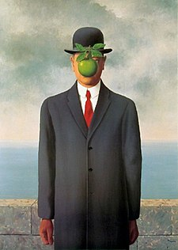
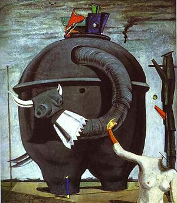

Persistence paměti od Salvadora Dali
Persistence paměti (The Persistence of Memory, 1931) od
Salvadora
Dalího je ikonický surrealistický obraz. Roztavené hodinky symbolizují relativitu
času v
pusté krajině. Uprostřed je amorfní obličejová forma a kapesní hodinky s mravenci,
symbolizující rozklad. Obraz zpochybňuje tradiční pojetí času a reality, typické pro
surrealismus.

Metamorfóza Narcisa od Salvadora Dali
Metamorfóza Narcisa (The Metamorphosis of Narcissus, 1937) od
Salvadora Dalího je slavný surrealistický obraz. Zobrazuje Narcisa, jak se dívá do
vody,
kde se jeho odraz mění v ruku držící vejce s květinou. Tento obraz symbolizuje
transformaci a sebereflexi, typické pro surrealismus, a vyvolává otázky o identitě a
realitě.

Syn člověka od Reného Magritta
"Syn člověka" je obraz od Reného Magritta z roku 1964. Zobrazuje muže v obleku s
buřinkou, stojícího před zdí s mořem a zamračenou oblohou v pozadí. Mužovu tvář zakrývá
zelené jablko, což vytváří záhadný a surrealistický efekt, zpochybňující naši schopnost
vidět skutečnost takovou, jaká je.

Slon Cebes od Maxe Ernsta
Obraz "Slon Cebes" od Maxe Ernsta z roku 1921 zobrazuje podivnou
postavu, kombinující prvky slona a lidského těla. Surreální postava má sloní hlavu s
dlouhým chobotem a lidské tělo, umístěné v nejasném a záhadném prostředí.